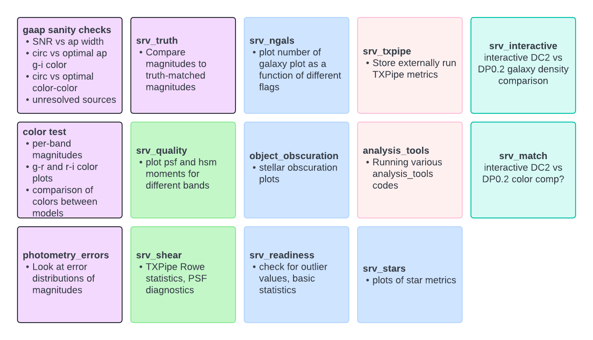

Running DESCQA#
Owners: PatriciaLarsen @plarsen
Last Verifed to Run: 2024-06-04 (by @plarsen)
This notebook will show you how to run the SRV-DESCQA validation tools. We’ll show you how to submit jobs to run them through the terminal, how to develop tests interactively on a notebook and how to look at the results.
List of tests#
Below you can see a chart of the currently implemented tests - purple (left-most) are photometry tests, green (second set) are shape tests, blue (middle column) are tests of flags, pink (fourth column) are external tests and teal (right) are interactive tests.
These are not guaranteed to be a complete set, if there’s anything you’d like in the test suite which isn’t implemented please ping the SRV group (current convenors Patricia and Yao) to add it to our list.

DP0.2#
This notebook will be updated to show how to do all this with the DP0.2 data and the SRV tests. The main changes are to use the SRV branch of DESCQA and the GCRCatalogs version mentioned in previous tutorials. A lot of the information is available here: https://docs.google.com/presentation/d/1ar-4lpOetJBX71M6LQeSqHLWoKzpJ1i0QpuVi8iJsO0/edit?usp=sharing
For the rest of the notebook this currently shows how to run the standard DESCQA in a notebook.
Running in terminal (preferred)#
For the most part when we run these tests you can use more resources, read data in parallel, and have the results automatically upload to the website by using the provided scripts in the terminal. I’ll go through these first - then show you how to run and develop smaller tests in a notebook if you prefer to work more interactively.
To get started download DESCQA from the github here:
https://github.com/LSSTDESC/descqa
and then checkout the “SRV” branch. We don’t currently have the SRV branch installed into the DESC kernels, this will likely change in future.
Running in a notebook#
Note that the web interface and parallel read are currently not supported in the notebook, however you should be able to run tests and get results into a local output directory of your choice. Please be mindful of resource usage on shared nodes, we’ll be running tests on small subsets of the catalogs for test purposes.
DC2#
First let’s start by doing some imports and defining some functions
from utils.utils import * # this is fairly minimal, imports and select_subset, interpret_results functions hidden for tidiness
GCRCatalogs = importlib.import_module('GCRCatalogs')
descqa = importlib.import_module('descqa')
Now let’s decide on which tests to run. SkyArea is a nice simple test that I often use if I need a check that descqa is running correctly, so let’s use that. We’re using it on the small cosmoDC2 catalog as that will load fairly quickly.
validations_to_run = ['SkyArea']
catalogs_to_run = ['cosmoDC2_v1.1.4_small']
In actually loading these we first confirm that they’re available within the GCRCatalogs and DESCQA versions you’ve imported
# let's just confirm these exist first of all - will raise a big red error if you've got the wrong name!
validations_to_run = select_subset(descqa.available_validations, validations_to_run)
catalogs_to_run = select_subset(GCRCatalogs.get_available_catalogs(False), catalogs_to_run)
if not validations_to_run or not catalogs_to_run:
raise RuntimeError('Nothing to run... Aborted!')
And now we load the catalog and the validation class.
# now let's load the catalogs, since we're running this interactively we're skipping the exception catching
catalog_instances={}
for catalog in catalogs_to_run:
catalog_instances[catalog] = GCRCatalogs.load_catalog(catalog)
validation_instances={}
for validation in validations_to_run:
validation_instances[validation] = descqa.load_validation(validation)
Finally let’s tell it where to output the data, and then ask the validation class to run on the catalog!
output_dir_this = './test_direc' # point to a directory where you want to store any plots or results
test_result = validation_instances[validation].run_on_single_catalog(catalog_instances[catalog], catalog, output_dir_this)
All the results will output in the folder you’ve specified, however there is some information from the test_result itself, I’ve made a little convenience function to output the information from there:
interpret_result(test_result)
Status code:
VALIDATION_TEST_INSPECT
No pass/fail criterion specified, inspection only
Summary message:
approx. 72.5989 sq. deg.
And let’s grab the output sky area image and plot it in the notebook!
for image in glob.glob( output_dir_this + '/*.png'):
print(image)
display(Image.open(image))
./test_direc/skymap.png

Development#
Okay so we can run the tests, but can we actually develop them in the notebook? Sure! Let’s copy that test class here and edit it to change the color of the map.
#let's have a look at the test
from descqa.base import BaseValidationTest, TestResult
import numpy as np
import healpy as hp
import os
import matplotlib.pyplot as plt
import matplotlib as mpl
class SkyArea2(BaseValidationTest):
"""
validation test to show sky area
"""
def __init__(self, **kwargs): #pylint: disable=W0231
self.nside = kwargs.get('nside', 64)
assert hp.isnsideok(self.nside), '`nside` value {} not correct'.format(self.nside)
def run_on_single_catalog(self, catalog_instance, catalog_name, output_dir):
if not catalog_instance.has_quantities(['ra_true', 'dec_true']):
return TestResult(skipped=True)
print("This is being developed locally!")
pixels = set()
for d in catalog_instance.get_quantities(['ra_true', 'dec_true'], return_iterator=True):
pixels.update(hp.ang2pix(self.nside, d['ra_true'], d['dec_true'], lonlat=True))
frac = len(pixels) / hp.nside2npix(self.nside)
skyarea = frac * np.rad2deg(np.rad2deg(4.0*np.pi))
hp_map = np.empty(hp.nside2npix(self.nside))
hp_map.fill(hp.UNSEEN)
hp_map[list(pixels)] = 0
cmap = mpl.colormaps['magma']
hp.mollview(hp_map, title=catalog_name, coord='C', cbar=None, cmap=cmap)
plt.savefig(os.path.join(output_dir, 'skymap.png'))
plt.close()
return TestResult(inspect_only=True, summary='approx. {:.7g} sq. deg.'.format(skyarea))
We now just need to create a dictionary of input arguments to pass in, and then we can initialize the class with those arguments as our validation
# we need to create an input dictionary to give any arguments required in the __init__ code, then we just initialize and run!
dict_config = {}
dict_config['nside'] = 128
dict_config['description'] = 'Displaying the sky coverage of each catalog'
validation2 = SkyArea2(**dict_config)
And we run it as before, swapping out the validation class
output_dir_this = './test_direc' # point to a directory where you want to store any plots or results
test_result = validation2.run_on_single_catalog(catalog_instances[catalog], catalog, output_dir_this)
This is being developed locally!
interpret_result(test_result)
Status code:
VALIDATION_TEST_INSPECT
No pass/fail criterion specified, inspection only
Summary message:
approx. 72.5989 sq. deg.
for image in glob.glob( output_dir_this + '/*.png'):
print(image)
display(Image.open(image))
./test_direc/skymap.png

Passing in data#
But what about when we’re developing quickly and we don’t want to load the data every time? Well when committing these tests we’ll need to know how to get the data, but for quick re-runs you can always load the data externally and pass it in through the dictionary. This also works when there’s a more expensive step but you just want to alter the output formatting. Let’s say I really don’t like either color and I want to mess around with more colormaps.
## Now if we want to truly run and alter this interactively we might not want to waste time on IO, so why don't we pass in
#the data as a dictionary in the meantime?
class SkyArea3(BaseValidationTest):
"""
validation test to show sky area
"""
def __init__(self, **kwargs): #pylint: disable=W0231
self.nside = kwargs.get('nside', 64)
self.data = kwargs.get('data')
assert hp.isnsideok(self.nside), '`nside` value {} not correct'.format(self.nside)
def run_on_single_catalog(self, catalog_instance, catalog_name, output_dir):
if not catalog_instance.has_quantities(['ra_true', 'dec_true']):
return TestResult(skipped=True)
print("Data is being passed in")
pixels = set()
pixels.update(hp.ang2pix(self.nside, self.data['ra_true'], self.data['dec_true'], lonlat=True))
frac = len(pixels) / hp.nside2npix(self.nside)
skyarea = frac * np.rad2deg(np.rad2deg(4.0*np.pi))
hp_map = np.empty(hp.nside2npix(self.nside))
hp_map.fill(hp.UNSEEN)
hp_map[list(pixels)] = 0
cmap = mpl.colormaps['Pastel1']
hp.mollview(hp_map, title=catalog_name, coord='C', cbar=None, cmap=cmap)
plt.savefig(os.path.join(output_dir, 'skymap.png'))
plt.close()
return TestResult(inspect_only=True, summary='approx. {:.7g} sq. deg.'.format(skyarea))
The only added step I need is to take out that data read, and put it externally (note that we load the whole dataset here not an iterative chunk).
d = catalog_instances[catalog].get_quantities(['ra_true', 'dec_true'], return_iterator=False)
dict_config = {}
dict_config['data'] = d
dict_config['nside'] = 128
dict_config['description'] = 'Displaying the sky coverage of each catalog'
validation3 = SkyArea3(**dict_config)
And now we just run the test without the read-in and can see what the new color looks like
output_dir_this = './test_direc' # point to a directory where you want to store any plots or results
test_result = validation3.run_on_single_catalog(catalog_instances[catalog], catalog, output_dir_this)
Data is being passed in
interpret_result(test_result)
Status code:
VALIDATION_TEST_INSPECT
No pass/fail criterion specified, inspection only
Summary message:
approx. 72.5989 sq. deg.
for image in glob.glob( output_dir_this + '/*.png'):
print(image)
display(Image.open(image))
./test_direc/skymap.png